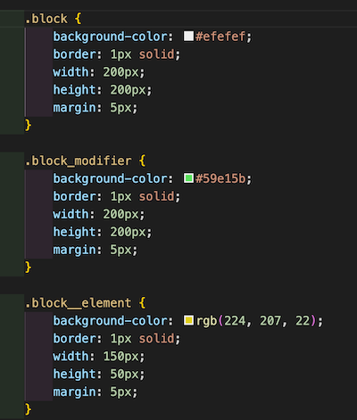
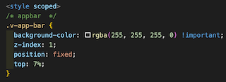

BEM
命名規則でCSS設計を行うイメージ
※MindBEMdingという手法もある。こちらの方が使っている会社は多いかも

Block
起点となる部分、この中にElement、Modifierが構成されている。
Element
Blockを構成する要素。アンダースコアを2つ__つける。
Modifier
Block、Elementのバリエーション違い。アンダースコアを1つ_つける
状態を表すと思った方がいいかも・・・
block_modifier
block__element
Vueで使う場合は、scoped styleが使いやすい。

手軽に行える分、子コンポーネントには、親のコンポーネントの属性がついてしまう。
導入前に、ルールを設けることが大切。
そう考えると、BEM+scoped styleが一番安定する様な所見。